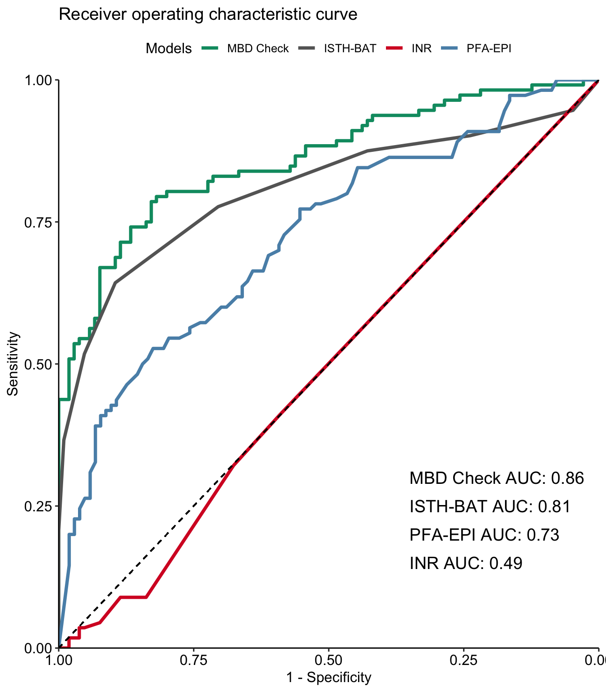
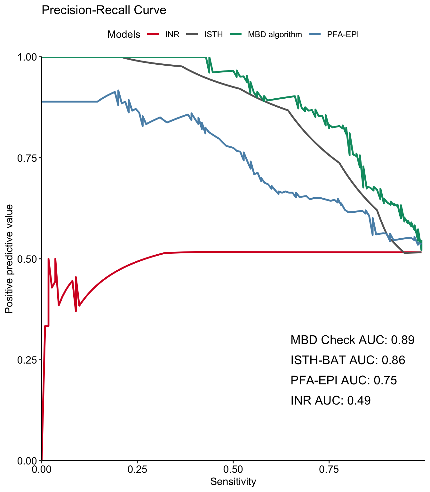
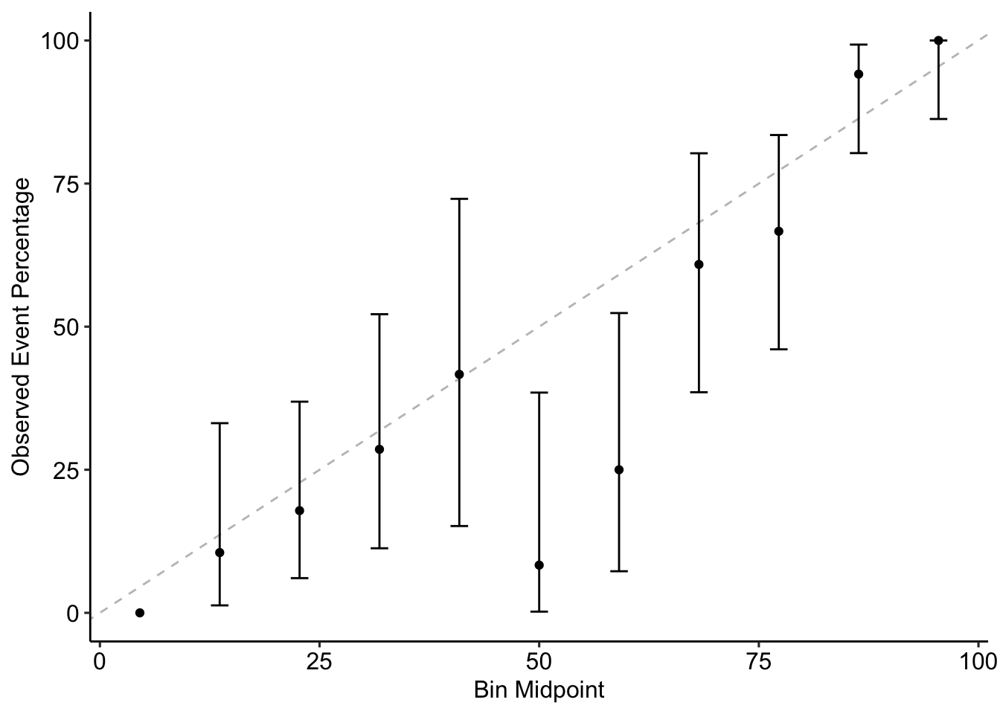

library(epiR)
library(caret)
library(pROC)
library(PRROC)
library(DT)
library(ggplot2)
library(ggpubr)
library(probably)
m.svm <- readRDS("modelsvm.RDS")
val.set <- readRDS("ExternalValidationSet.RDS")4 External validation
4.1 Introduction
In this chapter the external validation of the model. The model was validated with 217 patients from another tertiary hospital in Switzerland
4.2 Data loading
The data sets are loaded:
4.3 Diagnostic accuracy
Using the threshhold described in the last document the performance of the model was calculated using the epiR package
p.svm <- predict(m.svm, val.set, type = "prob", na.action = na.pass)[,2]
p.svm.categorical <- as.factor(ifelse(p.svm > 0.39, "MBD", "NoMBD"))
crosstable <- confusionMatrix(p.svm.categorical, val.set$mbd, positive = "MBD")
test.performance <- epi.tests(crosstable$table[c(2,1),c(2,1)])
test.performance Outcome + Outcome - Total
Test + 98 48 146
Test - 14 57 71
Total 112 105 217
Point estimates and 95% CIs:
--------------------------------------------------------------
Apparent prevalence * 0.67 (0.61, 0.73)
True prevalence * 0.52 (0.45, 0.58)
Sensitivity * 0.88 (0.80, 0.93)
Specificity * 0.54 (0.44, 0.64)
Positive predictive value * 0.67 (0.59, 0.75)
Negative predictive value * 0.80 (0.69, 0.89)
Positive likelihood ratio 1.91 (1.54, 2.38)
Negative likelihood ratio 0.23 (0.14, 0.39)
False T+ proportion for true D- * 0.46 (0.36, 0.56)
False T- proportion for true D+ * 0.12 (0.07, 0.20)
False T+ proportion for T+ * 0.33 (0.25, 0.41)
False T- proportion for T- * 0.20 (0.11, 0.31)
Correctly classified proportion * 0.71 (0.65, 0.77)
--------------------------------------------------------------
* Exact CIs4.4 ROC Analysis & Precision-recall-curves
We compared the performance of our model to the currently available screening tools (PFA-200, ISTH-BAT and INR)
# ROC analysis -----------------------------------------------------------------
r.svm <- roc(val.set$mbd, p.svm)
r.isth <- roc(val.set$mbd, val.set$isth2)
r.pfa <- roc(val.set$mbd, val.set$PFA_EPI)
r.inr <- roc(val.set$mbd, val.set$INR)
rocble <- ggroc(list(r.svm,r.isth,r.inr,r.pfa), size = 1.3)+
theme_pubr()+
geom_segment(aes(x = 1, xend = 0, y = 0, yend = 1), color="black", linetype="dashed")+
labs(x= "1 - Specificity", y = "Sensitivity", title = "Receiver operating characteristic curve", color = "Models")+
scale_color_manual(labels = c("MBD Check", "ISTH-BAT",
"INR", "PFA-EPI"), values = c("#019970","#666666", "#d6002a","#5990b6"))+
annotate("text", x = 0.35, y = 0.15, size= 5, label = paste("INR AUC:", round(r.inr$auc,2)), hjust = 0) +
annotate("text", x = 0.35, y = 0.3, size= 5, label = paste("MBD Check AUC:", round(r.svm$auc,2)), hjust = 0)+
annotate("text", x = 0.35, y = 0.25, size= 5, label = paste("ISTH-BAT AUC:", round(r.isth$auc,2)), hjust = 0)+
annotate("text", x = 0.35, y = 0.2, size= 5, label = paste("PFA-EPI AUC:", round(r.pfa$auc,2)), hjust = 0) +
coord_cartesian(expand = FALSE)
## Precision-recall ------------------------------------------------------------
pr.svm <- pr.curve(p.svm[which(val.set$mbd == "MBD")],
p.svm[which(val.set$mbd == "NoMBD")],
curve = TRUE)
pr.inr <- pr.curve(scores.class0 = val.set$INR[which(val.set$mbd == "MBD"& !is.na(val.set$INR))],
scores.class1 = val.set$INR[which(val.set$mbd == "NoMBD"& !is.na(val.set$INR))],
curve = TRUE)
pr.isth <- pr.curve(scores.class0 = val.set$isth2[which(val.set$mbd == "MBD" & !is.na(val.set$isth2))],
scores.class1 = val.set$isth2[which(val.set$mbd == "NoMBD" & !is.na(val.set$isth2))],
curve = TRUE)
pr.pfa <- pr.curve(scores.class0 = val.set$PFA_EPI[which(val.set$mbd == "MBD" & !is.na(val.set$PFA_EPI))],
scores.class1 = val.set$PFA_EPI[which(val.set$mbd == "NoMBD"& !is.na(val.set$PFA_EPI))],
curve = TRUE)
cu.svm <- pr.svm$curve
cu.inr <- pr.inr$curve
cu.isth <- pr.isth$curve
cu.pfa <- pr.pfa$curve
cu.svm[,3] <- "MBD algorithm"
cu.inr[,3] <- "INR"
cu.isth[,3] <- "ISTH"
cu.pfa[,3] <- "PFA-EPI"
cu.comp <- data.frame(rbind(cu.svm,cu.inr, cu.isth,cu.pfa))
cu.comp$X1 <- as.numeric(cu.comp$X1)
cu.comp$X2 <- as.numeric(cu.comp$X2)
cu.comp$X3 <- as.factor(cu.comp$X3)
pr.gg <- ggplot(cu.comp, aes(x = X1, y= X2, group = factor(X3),colour =factor(X3) ))+
geom_line(size = 1)+
scale_color_manual( values = c("#d6002a","#666666", "#019970","#5990b6"))+
theme_pubr()+
labs(x="Sensitivity",y="Positive predictive value", title= paste("Precision-Recall Curve"), color = "Models")+
xlim(0,.9999999)+
ylim(0,1)+
annotate("text", x = 0.65, y = 0.15, size= 5, label = paste("INR AUC:", round(pr.inr$auc.integral,2)), hjust = 0) +
annotate("text", x = 0.65, y = 0.3, size= 5, label = paste("MBD Check AUC:", round(pr.svm$auc.integral,2)), hjust = 0)+
annotate("text", x = 0.65, y = 0.25, size= 5, label = paste("ISTH-BAT AUC:", round(pr.isth$auc.integral,2)), hjust = 0)+
annotate("text", x = 0.65, y = 0.2, size= 5, label = paste("PFA-EPI AUC:", round(pr.pfa$auc.integral,2)), hjust = 0) +
coord_cartesian(expand = FALSE)
rocble
pr.gg

4.5 Calibration
ggplot(calibration(relevel(val.set$mbd,2) ~ p.svm)) +
theme_pubr()